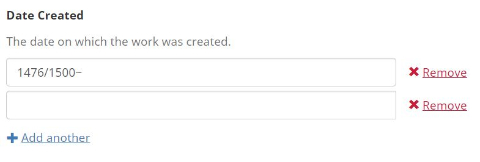

| Field Name(s) | Controlled Vocabulary |
|---|---|
| Provider, Creator, Contributor, Subject, Geographic Coverage, Physical Repository | OCLC FAST |
| Genre | Getty Art and Architecture Thesaurus |
| Rights Statement | https://rightsstatements.org; https://creativecommons.org |
* See Figure 3 in the article for a more detailed table
"creator":["http://id.worldcat.org/fast/78887"],
"creator_label":["Orpen, William, Sir, 1878-1931"],
"contributor":["http://id.worldcat.org/fast/2012667"],
"contributor_label":["Glenavy, Beatrice Moss Campbell,
Baroness, 1883-1970"],
"subject":["http://id.worldcat.org/fast/1050538",
"http://id.worldcat.org/fast/78887",
"http://id.worldcat.org/fast/2012667",
"http://id.worldcat.org/fast/1050534"],
"subject_label":["Painters--Correspondence",
"Orpen, William, Sir, 1878-1931",
"Glenavy, Beatrice Moss Campbell, Baroness, 1883-1970",
"Painters--Biography"
Go the page for any work and add /manifest.json or .ttl to the end of the URL
Dates are entered using EDTF notation...
And indexed in multiple formats
"date_created":["1476/1500~"],
"year_sort":"1476-01-01T00:00:00Z",
"year_range":[1476, 1477, 1478, 1479 ... 1500]
Dates are humanized for display. The links in the Date Created field link to faceted searches for items in the same date range.
Allows users to filter using broad categories (vault.library.uvic.ca) and complements the advanced search.
Able Player uses .vtt files (Web VTT format) to create interactive transcripts for videos when available.
docker_multitenant branch